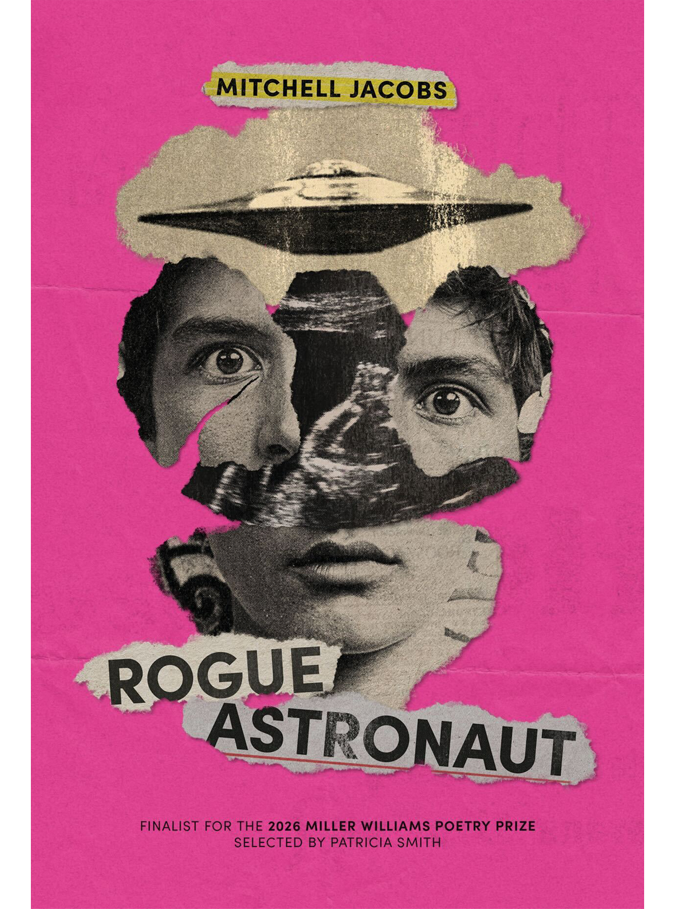

Rogue Astronaut was selected by Patricia Smith as a finalist in the 2026 Miller Williams Poetry Series. Order it from University of Arkansas Press, Bookshop, or Amazon.

At the core of Rogue Astronaut, Mitchell Jacobs’s debut poetry collection, is a mystery: Was the poet’s father abducted by aliens as a teenager? From this uncanny family lore spins a gravitational field of theory, grief, and imagination, spurring speculations about the extraterrestrial as well as the terrestrial question of familial bonds: What are the limits of understanding between two alien anatomies, between two unlike minds? Are we, after all, finally alone?
In poems that continually veer from play to reverence, from body horror to bodily delight, encounters with bed bugs and cuttlefish appear side by side with retro gaming and phantom light. A brother living with delusions turns toward the sky. The poet also peers skyward in search of connection—across family lines, across the body’s borders, across galaxies. Outer space becomes a metaphorical terrain where queer desire and spiritual longing collide. Just as Agent Mulder’s iconic X-Files poster declares “I WANT TO BELIEVE,” so do these poems ache to trust in something more—extraterrestrial life, divine presence, intimacy.
Jacobs’s electrifying collection offers readers a singular voice attuned to the strangeness of living now—where science fiction and memory, tenderness and dissociation, belief and doubt pulse in tangled orbit. With wit, vision, and formal inventiveness, Rogue Astronaut charts a course through the mysterious and the intimate, inviting us to imagine new ways of connecting across distance, time, and the alien terrain of self.